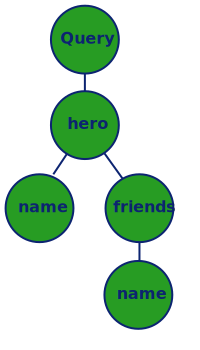

1Ghent University – imec – IDLab, Belgium
2Department of Computer and Information Science (IDA) — Linköping University, Sweden
In:
{
me {
name
}
}
Out:
{
"data": {
"me": {
"name": "Luke Skywalker"
}
}
}
describes structure of data that can be queried
retrieves data for specific fields
executes full GraphQL queries
Query type defines all query entrypoints.type Query {
me: User
}
type User {
id: ID
name: String
}
function(parent, args, context, info)
parent: Resolver result from parent field, or root value.args: Arguments passed to the field. (e.g. { key: "value" })context: Object shared by resolvers per request (e.g. authentication)info: Query execution state (e.g. field name, path)const hero = (_, args) => db.find('hero', { name: args.name });
GraphQL Query:
query {
hero {
name
friends {
name
}
}
}
AST:
GraphQL Schema:
type Query {
hero: Character
}
type Character {
name: String!
friends: [Character]
}
Validation steps:
hero in Query?name in Character?friends in Character?name in Character?AST:
Resolvers:
{
Query: {
hero: () =>
db.findAll('hero'),
},
Character: {
name: (char) =>
db.find('name', char),
friends: (char) =>
db.findAll('friend', char),
}
}
AST:
Resolvers:
{
Query: {
hero: () =>
db.findAll('hero'),
},
Character: {
name: (char) =>
db.find('name', char),
friends: (char) =>
db.findAll('friend', char),
}
}
AST:
→ [1,2]
Resolvers:
{
Query: {
hero: () =>
db.findAll('hero'),
},
Character: {
name: (char) =>
db.find('name', char),
friends: (char) =>
db.findAll('friend', char),
}
}
AST:
→ [{name:'Luke',friends:[2]},{name:'Leia',friends:[1]}]
Resolvers:
{
Query: {
hero: () =>
db.findAll('hero'),
},
Character: {
name: (char) =>
db.find('name', char),
friends: (char) =>
db.findAll('friend', char),
}
}
AST:
→ [{name:'Luke',friends:[...]},{name:'Leia',friends:[...]}]
It includes:
It does not include:
graphql parses, validates, and executesSchema and resolvers are combined in a single datastructure.
const schema = new GraphQLSchema({
query: new GraphQLObjectType({
name: 'RootQueryType',
fields: {
hello: {
type: GraphQLString,
resolve() {
return 'world';
}
}
}
})
});
const result = await graphql(schema, '{ hello }');
express-graphqlExpress example:
app.use('/graphql', graphqlHTTP({
schema: MyGraphQLSchema,
graphiql: true
}));
Main features:
(+): Team plan; (++): Enterprise plan
const typeDefs = gql`
type Book {
title: String
author: String
}
type Query {
books: [Book]
}
`;
const resolvers = {
Query: {
books: () => ...,
},
};
const server = new ApolloServer({ typeDefs, resolvers });
server.listen().then(({ url }) => {
console.log(`🚀 Server ready at ${url}`);
});
data sources, caching, authentication, subscriptions, testing, ...
Data sources are abstractions for data fetching from specific services.
Built-in support for caching, result deduplication, and error handling.
class MoviesAPI extends RESTDataSource {
constructor() {
super();
this.baseURL = 'https://movies-api.example.com/';
}
async getMovie(id) {
return this.get(`movies/${id}`);
}
}
Data sources must be configured in server.
Resolvers can access data sources from context.
const server = new ApolloServer({
...
dataSources: () => { return { moviesAPI: new MoviesAPI() }; },
});
const resolvers = {
Query: {
movie: async (source, { id }, { dataSources }) => {
return dataSources.moviesAPI.getMovie(id);
},
},
};
Resources are by default cached with an in-memory LRU cache.
Alternative caches can be configured, such as Memcached or Redis
const { MemcachedCache } = require('apollo-server-cache-memcached');
const server = new ApolloServer({
...
cache: new MemcachedCache(
['memcached-server-1', 'memcached-server-2'],
{ retries: 10, retry: 10000 }, // Options
),
});
HTTP authorization headers can be placed into the context.
const server = new ApolloServer({
...
context: ({ req }) => {
const token = req.headers.authorization || '';
const user = getUser(token);
return { user };
},
});
Different publish and subscribe primitives: PubSub, WebSocket
const typeDefs = gql`
type Subscription {
postAdded: Post
}
type Post {
author: String
comment: String
}`
const resolvers = {
Subscription: {
postAdded: {
subscribe: () => pubsub.asyncIterator(['POST_ADDED']),
// emit with pubsub.publish('POST_ADDED', { postAdded:args });
},
},
};
Mocks the request pipeline and HTTP server
Allows testing of schema, resolvers and datasources
it('fetches single launch', async () => {
const { query } = createTestClient(server);
const res = await query({ query: '...', variables: { id: 1 } });
expect(res).toMatchSnapshot();
Apollo has
(+): Team plan; (++): Enterprise plan
Apollo is the most popular platform, used by Airbnb, Twitch, Medium, ...
It accepts GraphQL queries and returns JSON results
GraphQL schema, Resolvers, and a Query Engine
It enables GraphQL querying in code (graphql-express for HTTP interface)
Commercial tools such as Apollo, Yoga, ...